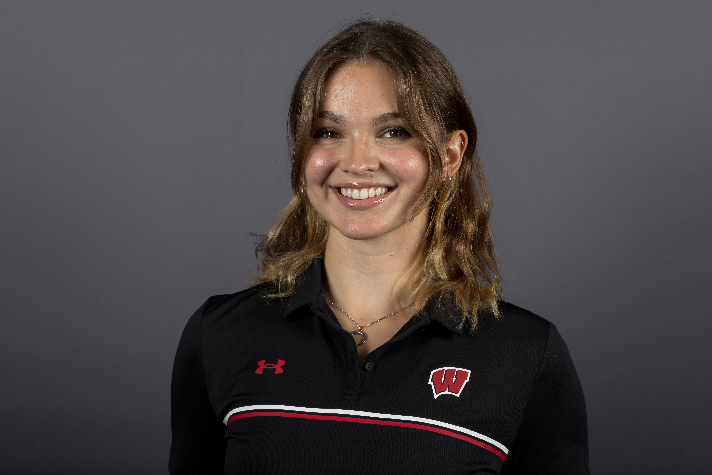
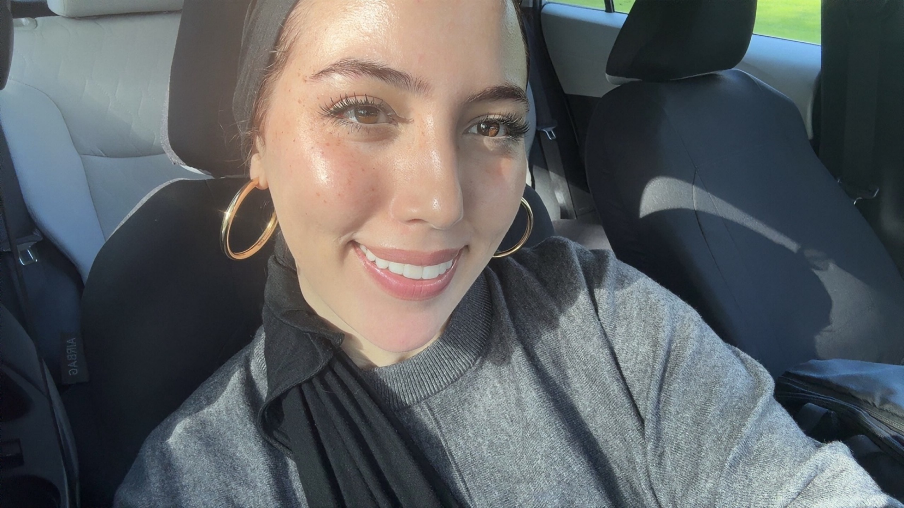
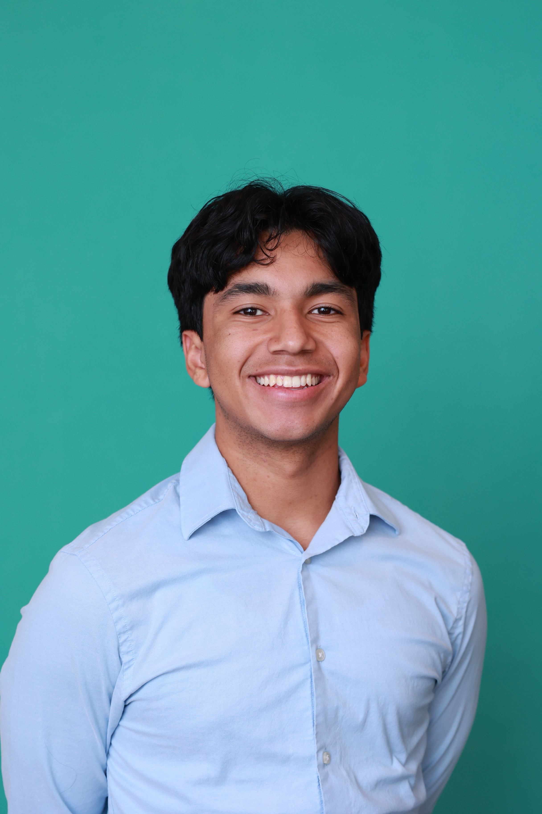

I'm majoring in Information Science, with certificates in Computer Science and Video Game Design. I also compete on the Women's Rowing Team. Outside of school, I enjoy painting and baking. I am taking this course because I am interested in understanding the disparities within the compting industry and why they happen. My favorite area of technology is video game development because it combines technology with creativity, design, and storytelling.

I'm a senior at UW–Madison studying Information Science with a minor in Data Science, and my focus is cybersecurity. I was born in Casablanca, Morocco, and grew up between Casablanca and the United States. Outside of school, I love surfing, especially when I'm in Morocco, painting, playing instruments like the piano, and reading psychology and philosophy books. My favorite area of technology is quantum computing because I love how it combines computer science, mathematics, and physics to explore what computers could be capable of in the future.

I am a Senior majoring in Information Science with a Certificate in Computer Science. I am also a leader for BadgerCru, a christian organization on campus. I love anything to do with soccer, going to the gym, and anything to do with God. My favorite area of technology is the end user experience, how humans interact with it to enable them to impact society.
